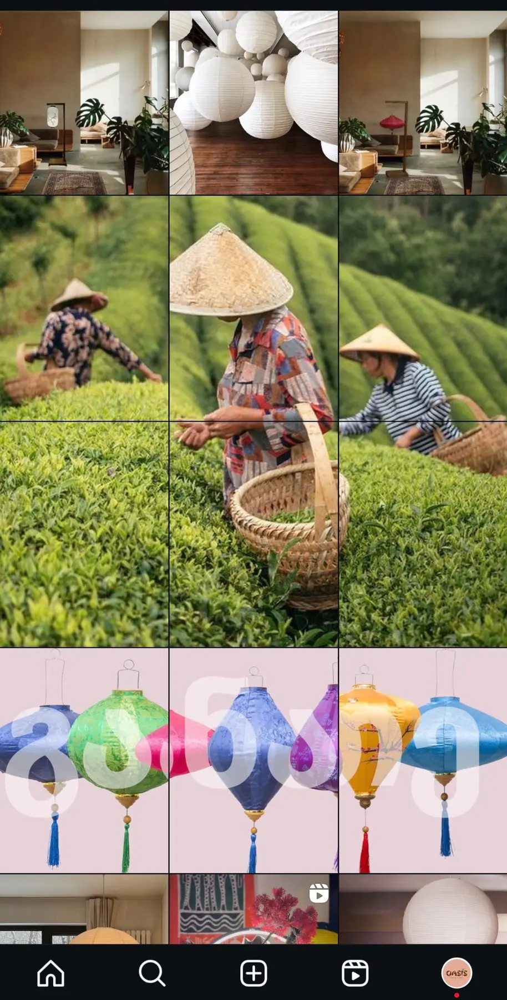

From the very beginning, Oasis was designed as more than an e-commerce brand. It was a visual language, a mood and a lifestyle rooted in Asian-inspired interiors and thoughtful design. Social media became the space where that identity had to live, breathe and resonate.
The Role: Founder, Creative Director, Strategist
As the founder of Oasis, I was fully responsible for shaping the brand’s social media presence from the ground up. This meant wearing multiple hats at once—creative director, UX writer, strategist and analyst.
Every decision had to be intentional because the target audience was highly specific: design-aware, detail-oriented individuals drawn to calm, chic and expressive interiors.
There was no room for visual noise or generic trends. The content needed to feel curated, considered and deeply aligned with the audience’s aesthetic sensibilities.


Designing a Visual Language
The foundation of Oasis’ social presence was a carefully curated visual system. I developed a consistent visual language that balanced ambient minimalism with bold, expressive accents. The feed needed to feel cohesive without becoming repetitive—refined, yet alive.
- Colour palettes were selected to evoke warmth, calmness and sophistication.
- Compositions focused on space, light and texture.
- Negative space created intentional breathing room.
- Visual rhythm ensured the feed felt harmonious as a whole.
The goal was simple but demanding: make Oasis instantly recognisable, even without a logo.
“Invite the audience into a mood, not a transaction.”
Understanding the Audience
The niche audience Oasis spoke to was not looking for perfection. They were people who find beauty in chaos—those who see elegance in irregularity, harmony in contrast and meaning in imperfect spaces. This perspective shaped every creative decision.
Instead of overly styled or sterile visuals, the content leaned into lived-in environments, subtle imperfections and natural light. The brand needed to feel human, warm and emotionally resonant—not aspirational in a distant way, but inviting and real.
Content as a UX Experience
Social media was treated as a user experience, not a posting schedule. I continuously monitored performance, observed user behaviour and refined content based on engagement patterns. Captions, tone of voice and pacing were adjusted to feel natural rather than promotional.
Every post was designed to feel intuitive and effortless to consume, communicate brand values without over-explaining and invite the audience into a mood rather than a transaction. This UX-driven approach ensured consistency not only visually, but emotionally.
Hands-On Execution
To maintain full creative control and visual consistency, I personally led and executed multiple photography sessions. Products were photographed across real interiors, capturing them in lived-in spaces rather than staged environments.
From shooting to editing to final curation, every step was intentional—ensuring that what appeared on social media felt cohesive, considered and unmistakably Oasis.
The Result
The outcome was a strong, cohesive digital presence that positioned Oasis as more than a store. It became a curated lifestyle and aesthetic experience—consistent across platforms and instantly recognisable to its audience.
My goal was always clarity and recognition. By paying close attention to visuals, tone and small details, I ensured that Oasis’ social media presence felt natural, intentional and true to the audience it was created for. Social media became an extension of the brand’s identity—not an obligation, but an experience.